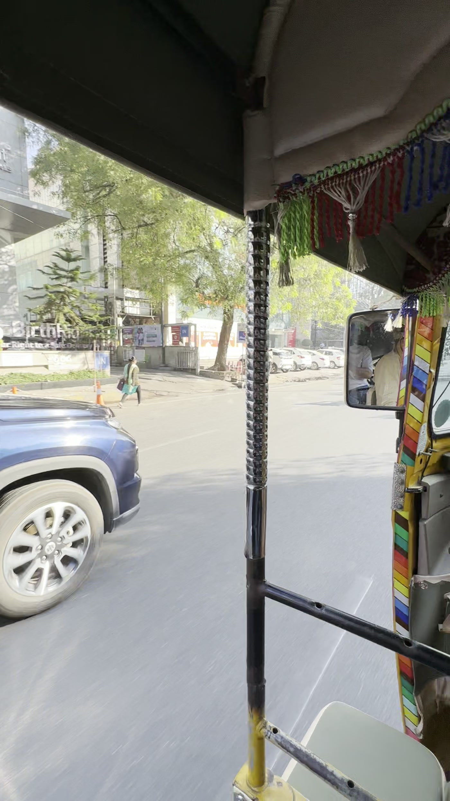
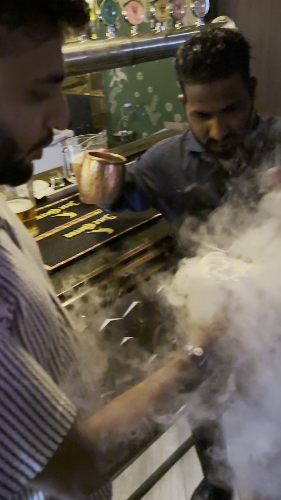
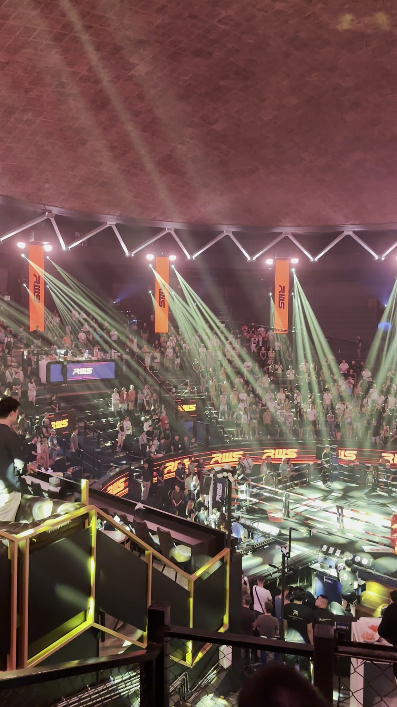
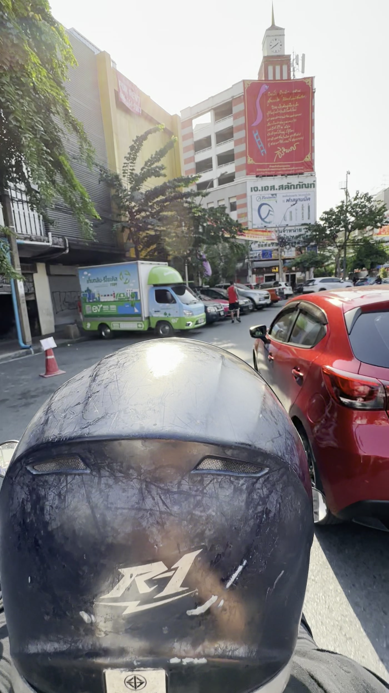
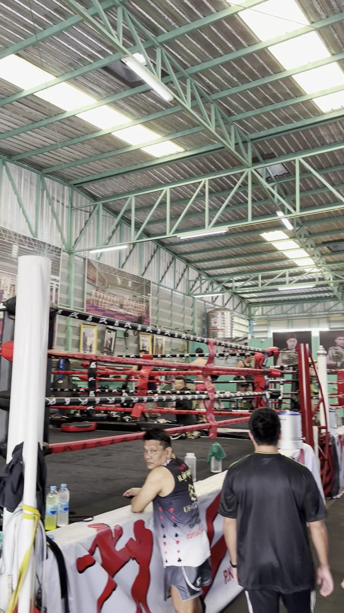
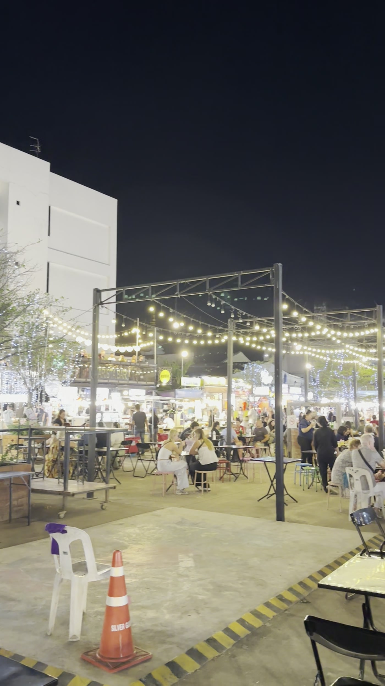
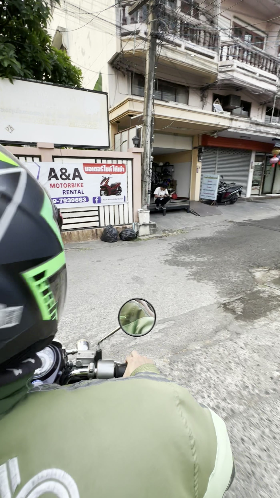

A long winter loop: a few days in Hyderabad, then the bulk of the trip in Bangkok with a side run north to Chiang Mai. This leg lived on my phone's camera roll as clips rather than photos — so the stills below are pulled straight from the videos.
Hyderabad


Auto-rickshaws & smoke
The trip opened in Hyderabad — tasseled auto-rickshaws weaving through traffic by day, dry-ice cocktails at a bar by night. A short, fast first leg before the flight east to Bangkok.
Bangkok

Fight night & a temple on the river
Bangkok at full volume: a Muay Thai card under the lasers at Rajadamnern Stadium, and a riverside rooftop with Wat Arun lit gold across the Chao Phraya — the Temple of Dawn at its best after dark.


The city by motorbike taxi
The fastest way through Bangkok is on the back of a motorbike taxi — helmet on, weaving past the white walls of the Grand Palace and the garland-draped avenues of the old royal quarter.
Chiang Mai


The mountain temple
North to Chiang Mai and up the mountain to Wat Phra That Doi Suthep — teak-and-gold halls hung with yellow Lanna lanterns, the gilded chedi behind. Evenings down in the night bazaar under a canopy of string lights.

And back on two wheels
Chiang Mai runs at a slower, lower-rise pace than Bangkok — quiet shophouse streets, scooter everywhere, then the flight back down to Bangkok to close out the trip.